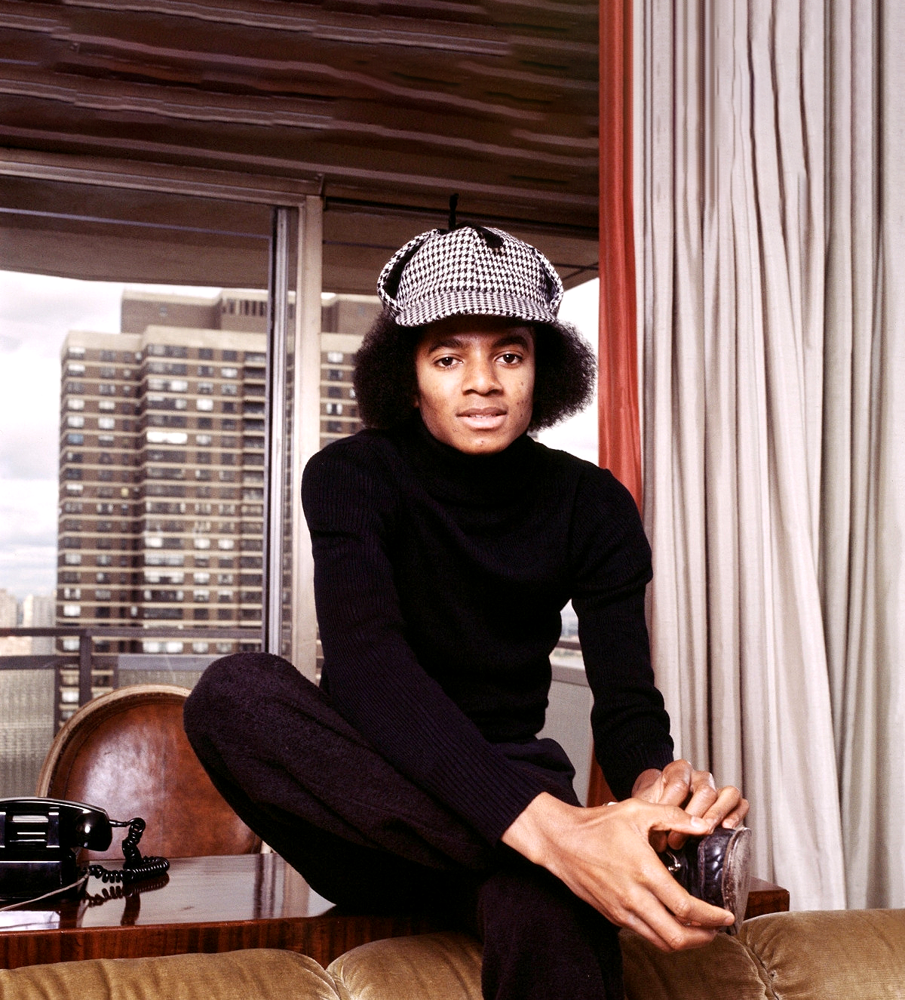
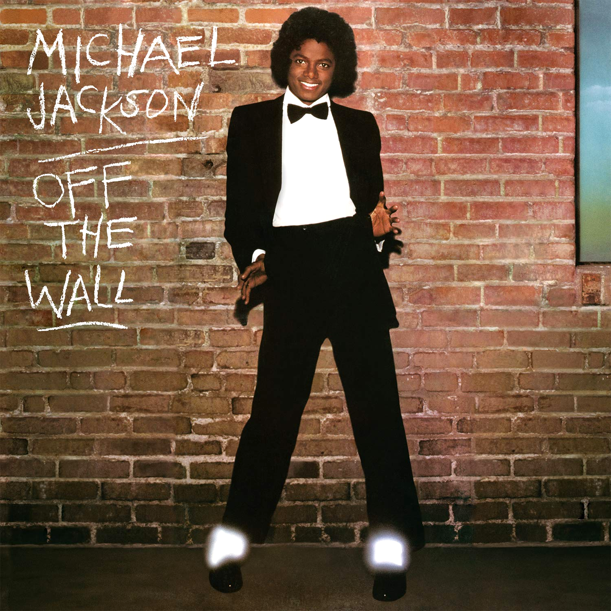
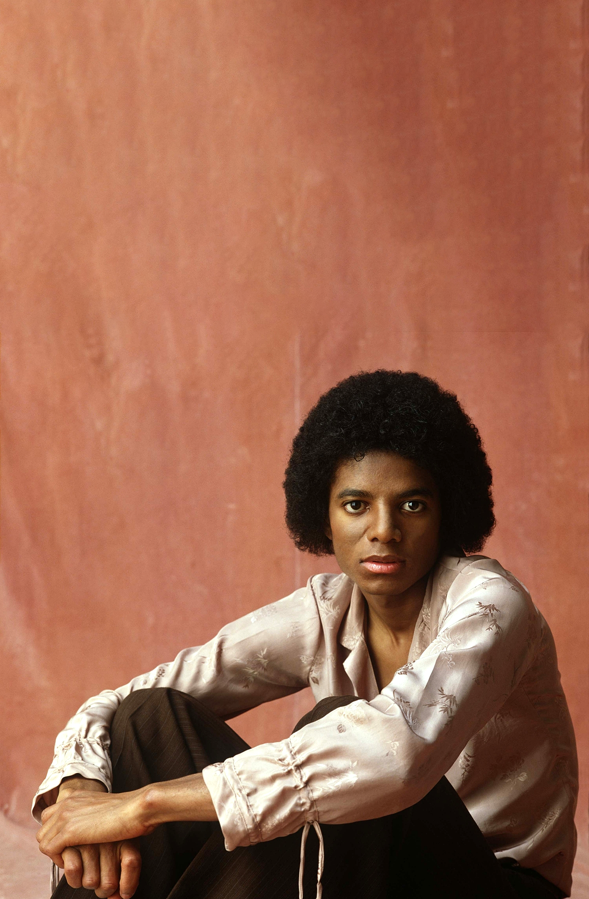

Day and Night

Michael began his solo career while simultaneously performing with the Jackson 5. He released his debut solo album at age 13 with Got to Be There (1971), making the charts with the title track. He had his first solo No. 1 single with the title track from his sophomore album Ben (1972), which he recorded for the 1972 film of the same name about a killer rat. Michael followed those albums with Music and Me (1973) and Forever, Michael (1975), the latter of which was his last album with Motown Records.
As Michael's stardom rose, he tried his hand at acting, and the experience left its mark on his music, too. Michael portrayed the Scarecrow in the Sidney Lumet directed film The Wiz (1977), starring alongside Diana Ross and Nipsey Russell. While living in New York City to make the film, Michael frequently visited the Studio 54 nightclub and was exposed to early hip-hop music, which contributed to his beatboxing in future songs like "Workin’ Day and Night".
Michael achieved his solo career breakthrough with Off the Wall (1979), his first album with Epic Records and his first produced by Quincy Jones, whom he met while working on The Wiz. An infectious blend of pop and funk, Off the Wall featured the Grammy Award–winning single "Don't Stop 'Til You Get Enough", along with such hits as "Rock with You", "She's Out of My Life", and the title track. Critics felt the album moved Michael from the pop music of his youth into a more complex sound, and some have called it one of the best pop albums ever made.
Michael was still performing with his brothers at this time, and the overwhelmingly positive response to Off the Wall helped the Jacksons as a group. Their album Triumph (1980) sold more than 1 million copies, and the brothers went on an extensive tour to support the recording. At the same time, Michael continued exploring more ways to branch out on his own. In 1983, Michael embarked on his final tour with his brothers to support the album Victory (1984). Michael's duet with Mick Jagger called "State of Shock" was the most successful single from the album.
Off
the Wall

Product with Quincy Jones for this solo breakthrough a disco-era masterpiece propelled by gleaming melodies, compulsive grooves and some of Michael's most spectacular performances.
